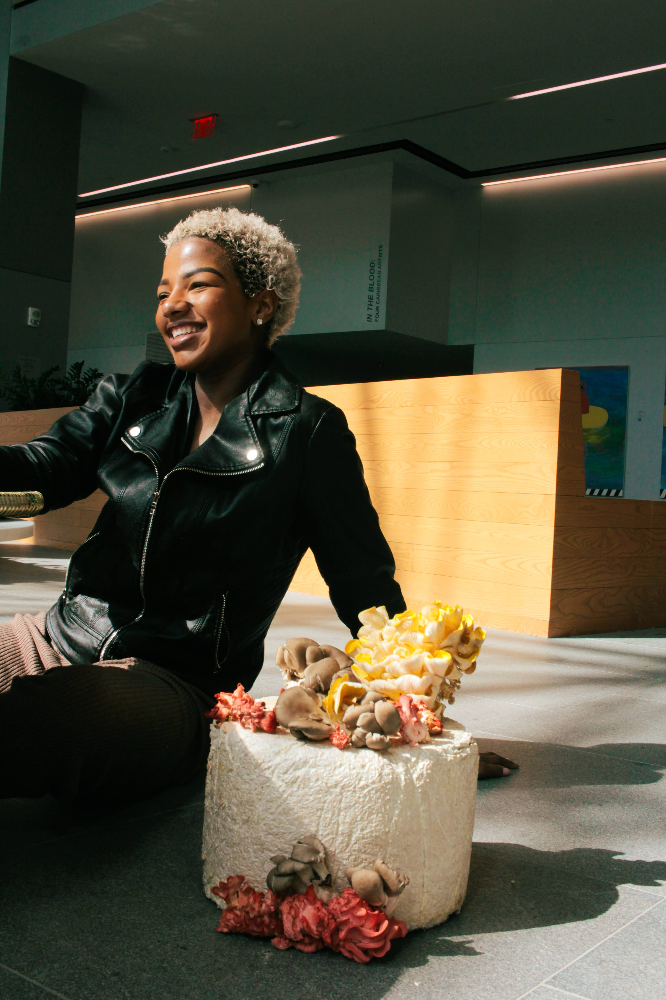
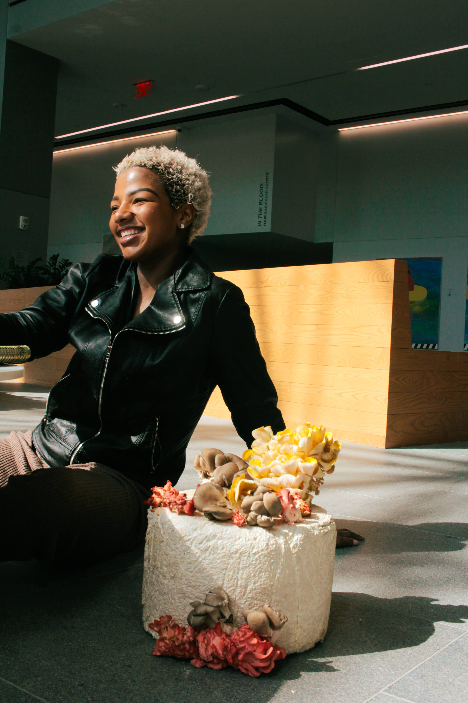

I approached this project with a sense of unease about what lies ahead. The pressing issues of climate change, pandemics, and political instability create an air of uncertainty that hangs over our world. It seems as though we are living in a time that is both literally and metaphorically akin to the days before the death of the sun.
 



This project represents a collection of our efforts to address the daunting question of how humanity can endure the inevitable demise of the sun. The sheer magnitude of this issue leaves room for countless possibilities, and while the answer may ultimately elude us, our pursuit to uncover it must never cease.
To tackle these challenges, I decided to focus on developing three core materials: Mycelium Lifewear, Photosynthetic Bioplastic, and Renewable Solar Energy. While keeping the production process approachable and easy to make at home with ingredients and objects we already have.


I encourage you to learn more about each one on our website below or in our book, Surviving Death of the Sun: Pieces That Live and Breathe. Where you'll find detailed instructions, a comprehensive philosophy, and much more.